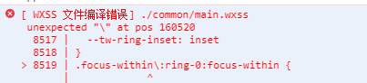
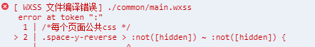
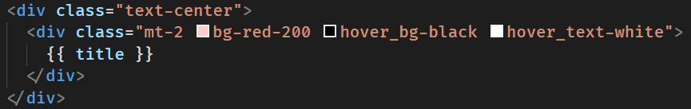
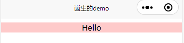
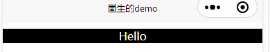

首页
uni-app最佳实践
代码仓库
tailwind
值得注意的是微信小程序并不支持一些 css 选择器还有他的 wxss 不支持
\
所以如果直接使用tailwindcss 会报错类似于图中这样的错 :

幸运的是 tailwindcss 支持自定义
separator
但是在类名中包含
.
的又需要
\.
这样的形式去声明类名而且貌似没有办法自定义这个， 所以在这种情况下我复制了
'tailwindcss/defaultConfig'
中的配置将
\
全部改成了
_

这种语法 wxss 也不支持.... 这里不是 css 类名修改可以避免的，就只能去
corePlugins
禁用相关的插件
禁用了
space
divideWidth
divideStyle
divideOpacity
css 的类名是允许以数字开头的，但需要进行转义，而
screens
配置中有一个
2xl
这个 key 会在类名的最前面出现，于是 tailwind 转义为
\32xl
这里就又有了
\
所以这里也需要
改一下
本 demo 对 tailwind 进行了如上定制，所以在使用的时候需要注意这些点
建议使用这里
⭐❤ tailwindcss 类名提示
链接中的插件
效果

源码

默认效果

hover 后的效果
相关 commit 记录
引入 tailwindcss 并在 微信开发者工具中正常跑起来的改动
b3c7085
🦄refactor(tailwind): 更好的配置文件
🐞fix(tailwind): 加回响应式配置
分享/文章
tailwind
章节 ：
dcloud